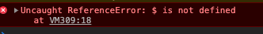

Now let's do the same thing with jQuery
Use the Chrome inspector and tell me
- What is the error?
- How do we fix the error?
The error was this:

We fix the error
By adding a script element with a src attribute pointing to a CDN
Where can you get jQuery CDNs
- From jQuery itself
-
Or from Google Hosted libraries which gives you the added benefit of
providing the script elements and the src attribute filled in with the
link to the latest
jQuery minified code. Then you just have to copy and paste it into your code and you're off
to the races.
Question
View the source code and you'll see we've added the script element
pointing to jQuery. Is the error gone?
Why is the error still there?
We added the link and we still get the `$` error which means jQuery is
still NOT defined